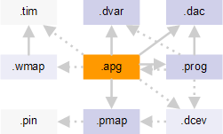

APG pattern file
The APG pattern file is the "master" file for the compiler. It contains the locations of all the other files needed as well as (optionally) program parameters and the mode context.

The pattern file has the .apg file name extension.
In detail, the APG pattern file contains:
- The names and locations of the files and other information required for compiling
the test pattern:
- APG program file (:apgProgram:)
- Device access file (:deviceAccess:)
- Device architecture file (:deviceArchitecture:)
- Optionally, a DC event file (:dcTest:, required only for using DC events)
- Pin mapping file (:pinMap:)
- Waveform mapping information (:waveformMap:), referencing either a timing file or a waveform mapping file which references a timing file in turn
- Optionally, a reference to a memory device maintenance operation (:maintenanceOperation:).
- Optionally, a reference to a match loop padding setup (:countedMatchPad:).
- Optionally, references to scrambling, null data, CRC, bus inversion, and similar settings.
- Optionally, specifications of program parameters used in the APG program code (:programParams:).
The APG pattern file's syntax and keywords are described in APG pattern file syntax.
Example
:apgPattern:
{
:apgProgram: "refresh_routines.prog"
:deviceAccess: "../../device_defs/access_defs/ddr3_64Mx8_x4.dvac"
:deviceArchitecture: "../../device_defs/arch_defs/ddr3_64Mx8.dvar"
:pinMap: "../../device_defs/pin_maps/ddr3_64Mx8.pmap"
:waveformMap: "../../device_defs/waveform_maps/ddr3_x4.wmap:PreDefined"
:nullData: 0
:scramble: ""
:dataScramble: ""
:bitInversion: ""
:bitOrdering: ""
:maintenanceOperation: "allcore_refresh"
:programParam:
{
:format:
{ :name: :value: }
# tCK based Device timing parameters
# - based on 1066: tCK period 1.875ns.
# - based on 64Mx8 = 512Mb --> tRFC=90ns
{ tRFC 48 }
}
}Functional changes
- Introduced before SmarTest 6.3.2
- MTP 2.6.6: :countedMatchPadding: keyword added
- MTP 3.0.3: (MTP on SOC 103.0.0) :countedMatchPadding: keyword changed to :countedMatchPad: